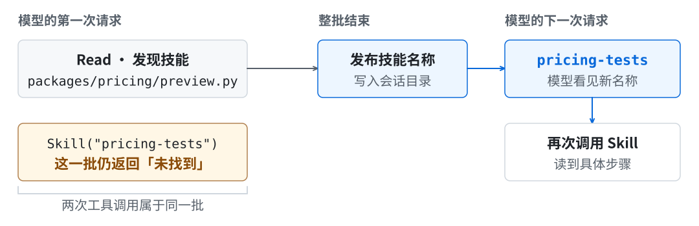

什么时候加载 Skill，加载以后谁来做事
你请 agent 验收 export.csv，让它报真实表头、时间样例和判定码。模型第一步做的却是 Skill({"name": "csv-export-audit"})。导出文件还没打开，它刚取到了什么？再看下一次调用，就能分清一套流程怎样从目录里被选中，又是谁照着步骤去做事。
先拿验收步骤，再去读产物
这是 2026 年 11 月 18 日的只读实录。三次请求都用 deepseek-flash。第一次请求给了用户的任务，也给了程序装配好的流程目录。单看目录那一行，模型已经知道哪套流程大概适用，还不知道具体要验哪几列。
system 中的目录
可用技能
- csv-export-audit:验收 CSV 导出文件表头和 UTC 时间字段时使用。
任务符合时先调用 Skill 查看步骤。
user
按当前项目适用的流程验收 export.csv，给出实际表头、时间样例和流程规定的判定码。只读。模型点了目录中的 csv-export-audit。程序找到这个名称，把步骤当作工具回包交回主循环。下面这两段是下一次请求中保留的调用和结果。看它们的编号，回来的正文正是这次 Skill 调用拿到的。
assistant tool_calls · call_00_KncmXAwoadOYktdFrzDZ7413
Skill {"name": "csv-export-audit"}
tool_call_id · call_00_KncmXAwoadOYktdFrzDZ7413
# Skill: csv-export-audit
读取 export.csv。表头应为 order_id,exported_at。
逐行核对 exported_at 是否以 Z 结尾。
两项均满足时报告判定码 EXPORT_TZ_UTC_OK，并引用文件中的实际表头与时间样例。现在模型知道表头应该是什么了。报告实际表头，还得打开那份导出。它发起 Read，第三次请求才带回产物内容。
assistant tool_calls · call_00_ZUCYMdy4voYYFaODldBA8970
Read {"path": "export.csv"}
tool_call_id · call_00_ZUCYMdy4voYYFaODldBA8970 · 回包节选
1 order_id,exported_at
2 demo-001,2026-11-18T06:30:00Z最终回答给出了 order_id,exported_at、2026-11-18T06:30:00Z 和判定码 EXPORT_TZ_UTC_OK。其中前两项来自 Read，最后一项来自流程约定。这份文件只有一行数据，这次验的范围也很具体，就是表头以及这一行的时间以大写 Z 结尾。若想知道有无流程会不会改变判断，可以给两组都看同一批导出，其中混入表头正确、时间却少了 Z 的样本。按同一判定条件比较错判和漏判，再数工具调用。模型会打开流程，只是其中一个能观察到的动作。
Skill 这次只填了必填的 name。如果要给流程补一句只核对某份导出，也可以传可选字符串 args。程序先比对带命名空间的调用名（例如 reports:audit），再尝试名称和简名。命中会记录一次使用。回包除了流程步骤，还可以附上它所在的目录。步骤写“读 fields.json”时，模型可以用这个位置找到随 Skill 放置的规则文件。
text = await ctx.adaptSkill(skill["body"]) if ctx.adaptSkill else skill["body"]
location = (f"(目录:{skill['dir']},正文中引用的相对资源以此为根)\n"
if skill.get("dir") else "")
argsNote = f"\n(用户参数:{args['args']})\n" if args.get("args") else ""
return f"# Skill: {skill['name']}\n{location}\n{argsNote}{text}{_FOLLOW}{_CAPABILITY_NOTE}"看末尾的 return。location 和 argsNote 都是加到回包里的文字。这一步没有把后续 Read 需要的路径改成另一个起点，也没有替模型执行步骤。回到导出案，规则写着“读取 export.csv”，把真实表头带回来的仍是下一次工具执行。「流程交代做法，工具交回证据，动手时还要按具体操作检查权限。」 文件可能要从另一个目录读取，工具本身也可能未向这轮模型开放。回看执行前的权限检查
同一份验收流程交给 Claude Code，也是在调用后才载入正文。假如流程为这次验收中的 Read 预先列了许可，让 allowed-tools 生效的环境可以少一次确认。到用户下一次发消息时，这份许可已经清除，刚才的流程正文仍留在会话里。若存加载的是流程文字和资源位置。流程给出“接着读导出文件”的做法，实际读取仍按下一次具体的 Read 调用检查权限。 Claude Code 的 Skill 工具许可 · 若存读取的头部字段
同名的两份流程，最后用哪一份？
假设用户目录也有一份 csv-export-audit，原生项目目录则把表头改成这家仓库自己的格式。第一次请求里的名称仍只有一条。程序先从磁盘读出 SKILL.md，取顶部两行 --- 之间的头部配置和下方的步骤。目录只把名称、简短用途和触发说明发给模型。这里的“按需”说的是正文进入模型上下文的时机。启动时程序已经读过生效的文件。
byName: dict[str, Skill] = {}
for skill in byRealpath.values():
byName[skill["name"]] = skill
return list(byName.values())这两份文件都启用、实际路径也不同。加载顺序是兼容用户、原生用户、兼容项目、原生项目，兼容来源须先配置。文件先按实际路径去重，随后用名称当键。例子里项目那份后到，覆盖 byName 里的用户版本。磁盘加载出的同名条目也会遮住内置 core 项。启动还会过滤停用项，--no-skills 会跳过加载和动态发现。 启动加载顺序与开关
再让项目版本服务于人工复核，把 disable-model-invocation 设为 true。它仍可以列在 /skills 面板里。给模型的目录会跳过它，Skill 处理器也先过滤这类条目再匹配名字。所以即使模型猜出 csv-export-audit，那次调用也只能拿到查找失败。 模型目录的过滤 · 按名取正文前的过滤
用户可以从终端输入 /csv-export-audit。这一入口查的是 user-invocable，只要项目版本仍在活跃清单里、也没有关闭用户调用，程序就会把命令展开为正文。入队记录保留原命令和当时的展开结果，恢复会话时仍有原先提交的那份正文。要保留哪个入口，就设对应的开关。 手动调用的过滤 · 展开并入队
文件读到了，为什么同批还没找到流程？
换到定价仓库。这里有一套专门检查价格预览的测试流程。启动目录里只有通用的 debug，专用的 pricing-tests 放在 packages/pricing/.ruocun/skills/pricing-tests/SKILL.md，启动时还没发现。假设用户提到了这个名字，模型便在同一次响应里要求两件事。
Read({"path":"packages/pricing/preview.py"})，打开预览代码。Skill({"name":"pricing-tests"})，取配套测试步骤。
按源码推演，就算 Read 先返回成功，同批的 Skill 仍会报“未找到”。图里的两轮对应前后两次模型请求，可以发生在同一个用户回合里。

读取文件时，程序只把成功访问的路径记下来。要等这一批调用的结果都与原请求配好并保存后，才拿这些路径发现 Skill。刚才那次 Skill 仍查原有清单。目录消息保存成功后，下一次模型请求会多带一条目录记录，其中有 pricing-tests 的名字和用途。这才有依据重新请求它的正文。即使已经装上通用的 Skill 工具，工具里的可选条目仍要等这次公布。 工具批结束时发布
新目录先进入会话，再登记到清单
只有聊天里的 packages/pricing/preview.py，发现器还没有路径可用。这里的 Read 先拿到实际文件的访问许可。文本成功取回后，把已解析的路径交给发现回调。程序从文件所在目录向工作区根走，把物理位置仍在工作区内的 .ruocun/skills 目录列出来，跳过已经确认扫描过的目录以及已停用、已经生效或来自已知文件的条目。根目录的流程由启动加载负责。 Read 在哪里上报路径 · 查找附近的流程目录
同一份实际访问路径，还可让一份已经读过头部的流程生效。比如根目录的 pricing-check 写了 paths: packages/pricing/**，只有相关路径匹配后才应加入活跃清单。启动时最多检查 4000 个文件。假设这次启动还没扫到匹配项，动态发现开启时，这份流程先留在待匹配清单。访问 packages/pricing/preview.py 后，它才被命中。这里有两条路，pricing-check 是已知流程激活，pricing-tests 是在新目录找到的流程。两项都先留在候选里。 启动路径扫描 · 候选发现与条件激活
候选已经有了，下一次请求还得确实带上目录。假如先把 pricing-tests 设为可调用、标记目录已扫描，再保存新目录消息，保存失败就会留下两份不一致的记录。程序知道这项流程，模型没看见它，后来再访问也会因为“已扫描”跳过。多等一次保存确认，程序才知道应该在什么时候记下这次发现。
if catalog_texts:
catalog = [{"role": "system", "content": text} for text in catalog_texts]
await conversation.replace_context(session, [*session.messages, *catalog], reset_prompt=False)
# 保存期间即使收到暂停，也须发布已确认工作目录对应的同一候选。
skill_discovery.confirm(candidate, skills)replace_context 把包含新增名称和用途的 system 消息接在原历史后，保存后才换入会话。等它返回，confirm 再登记已扫目录，把命中的条件项移出待匹配清单，并把新条目加入活跃清单。如果明确没保存成功，就走不到确认。保存问题解决后，下一趟符合条件的访问还可准备候选。开始保存前会核对取消和回合代号。保存成功后，即使途中收到了暂停，也要完成这批候选的确认，让已公布的条目跟实际清单对上。 目录消息何时替换到活会话
第一次读这个文件时，旁边还没有 Skill 目录。如果把这次访问记成“目录已扫”，后来新建的目录就会被跳过。现有用例先在目录不存在时给发现器这条路径，确认空候选，再建目录。第二次交给发现器的路径完全相同，用例断言新目录进了候选清单。仅新增手动项时，模型没有目录文字需要保存，程序就可以在这一边界直接确认。 目录后来出现的测试
下一次打开目录，会看见什么？
同一个子目录新放了两份流程。pricing-tests 对模型开放，pricing-review 仅供手动调用。一次 Read 之后，程序都找到了，但保存目录消息失败，日志已确认本次未提交。此时用户能直接用 /pricing-review 吗？等允许重新尝试后，下一步该看哪两份记录来确认这些流程确实生效？
核对判断
先查活跃清单。这里只有这一批候选，保存失败后未走到 confirm，连仅供手动调用的那份也还进不了活跃清单。处理完保存失败后，再成功访问该目录。下一次模型请求的新增目录里应有 pricing-tests，用户侧的活跃清单应同时新增两项。pricing-review 仍没有出现在给模型的目录和名字查找结果里。
这一章带走什么
先让模型从简短目录里选流程，要用时再给完整步骤。一份流程可以教它读 export.csv，真实表头还得靠下一次读文件的回包。
读文件时发现了新流程，先把要给模型看的新目录存好，再开放这批条目。确认目录没存成时，保留原清单，下次符合发现条件还可以再试。
如果验收流程还要求到资料库查会员预览，光拿到步骤只够让模型知道要查。服务已经连上，为什么模型第一轮还是找不到查询工具？
面经自测
项目里的 Skill 是怎么加载的？
快手 · 一面 · 面经原帖 · 题意转述
展开参考回答
启动时先让模型知道有哪些流程、适合做什么。真遇到相应任务，再按名称取完整步骤。
若存检查导出的 CSV 时，先调用 Skill 拿到检查方法，再用 Read 打开产物。读完流程，还得看到实际表头和时间值才能回答。
Skill 和普通工具有什么区别？
小红书 · 一面 · 面经原帖 · 题意转述 可回看 第 3 章 第 5 章
展开参考回答
Skill 提供做事的步骤，工具负责执行具体动作。在 CSV 例子里，Skill 说要看时间末尾，Read 才把那一行真实数据拿回来。
你怎么判断一个 Skill 写得好，实际效果怎样看？
快手 · 二面 · 面经原帖 · 题意转述 可回看 第 3 章 第 9 章
展开参考回答
我会用同一批任务、同一套判定条件比较有无 Skill 的结果。分别看流程有没有选对、产物有没有判对，再看调用次数。单次跑通只能说明这一个案例。
用户目录和项目目录里有同名 Skill，若存怎样决定采用哪份？
若存设计题
展开参考回答
为什么我在面板上看得到这个 Skill，模型却不能自己调用？
若存设计题
展开参考回答
要分清给人手动用和允许模型调用两种入口。
若存把设了 disable-model-invocation 的流程标成仅手动，模型即使猜到名字，也不能通过 Skill 工具取它的正文。
聊天里提到一个子目录，为什么该目录的专用 Skill 还没出现？
若存设计题
展开参考回答
发现了新的 Skill，为什么先保存目录消息，再更新可用清单？
若存设计题